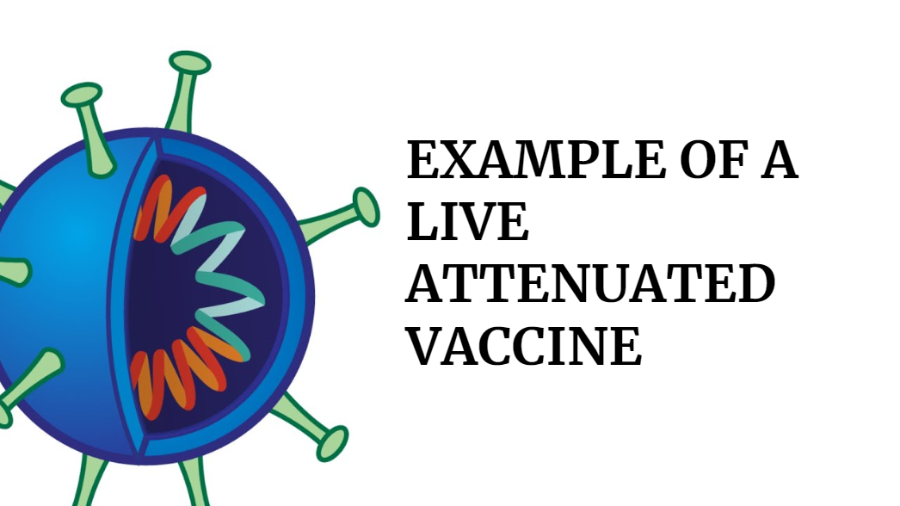
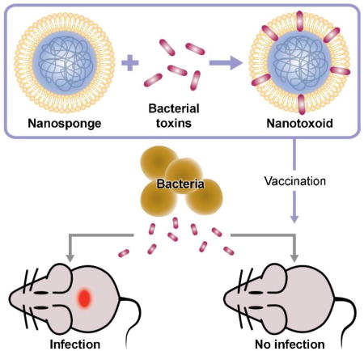

Type of Vaccines
Vaccines can be divided into several types, but ultimately they work on the same principle. The purpose is to
stimulate an immune response to recognize the pathogen (the organism that causes the disease) or part of the
pathogen. If the immune system is taught to recognize this, when later exposed to the pathogen, the body will
shed
it from the body. In particular, the immune system recognizes foreign "antigens", parts of the pathogen on the
surface or in the pathogen that are not normally found in the body.
Inactivated vaccines
Inactivated vaccines use the killed version of the germ that causes a disease.

Inactivated vaccines usually don't provide immunity (protection) that's as strong as live vaccines. So you may
need several doses over time (booster shots) in order to get ongoing immunity against diseases.
Inactivated vaccines are used to protect against:
- Hepatitis A
- Flu (shot only)
- Polio (shot only)
- Rabies
Live-attenuated vaccines
Live vaccines use a weakened (or attenuated) form of the germ that causes a disease.

Because these vaccines are so similar to the natural infection that they help prevent, they create a strong and
long-lasting immune response. Just 1 or 2 doses of most live vaccines can give you a lifetime of protection
against a germ and the disease it causes.
But live vaccines also have some limitations. For example:
Because they contain a small amount of the weakened live virus, some people should talk to their health care
provider before receiving them, such as people with weakened immune systems, long-term health problems, or
people who've had an organ transplant.
Live vaccines are used to protect against:
- Measles, mumps, rubella (MMR combined vaccine)
- Rotavirus
- Smallpox
- Chickenpox
- Yellow fever
Toxoid vaccines

Toxoid vaccines use a toxin (harmful product) made by the germ that causes a disease. They create immunity to
the parts of the germ that cause a disease instead of the germ itself. That means the immune response is
targeted to the toxin instead of the whole germ.
Like some other types of vaccines, you may need booster shots to get ongoing protection against diseases.
Toxoid vaccines are used to protect against: